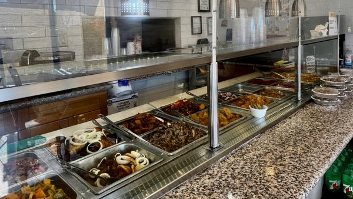
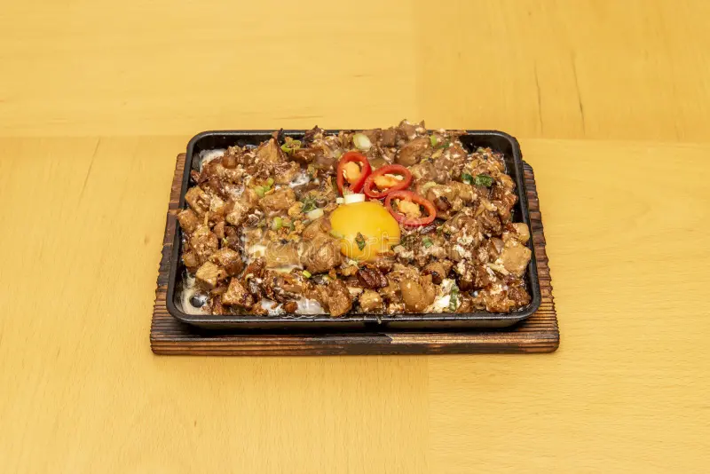
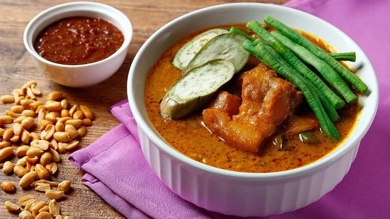
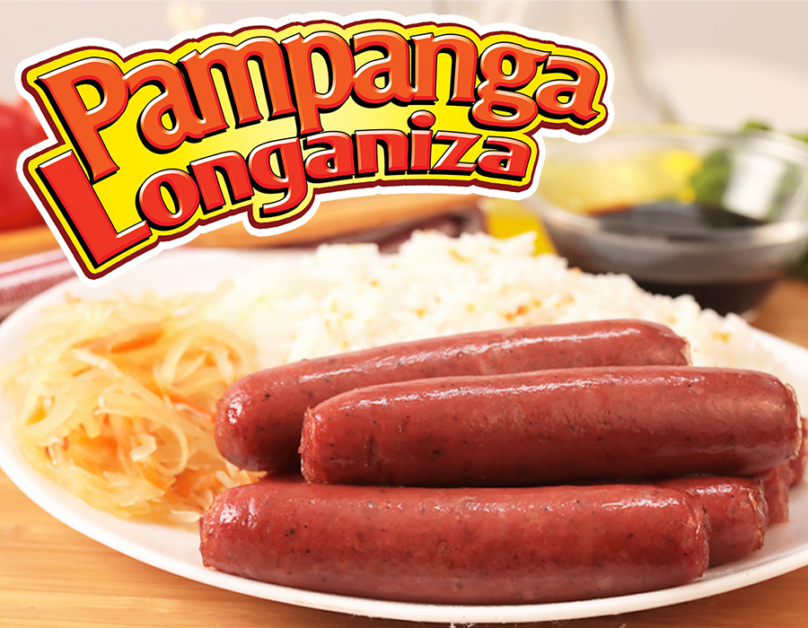
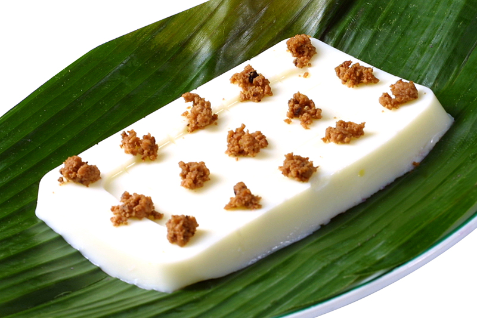
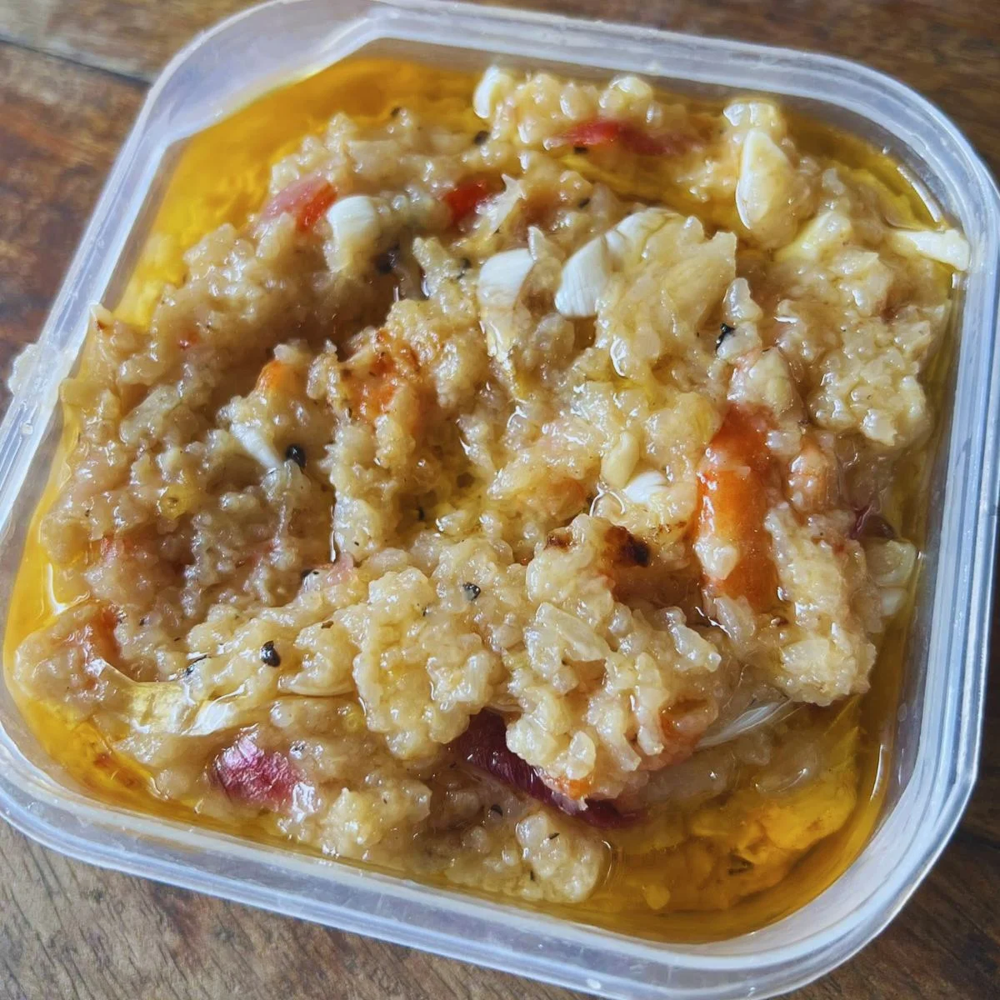
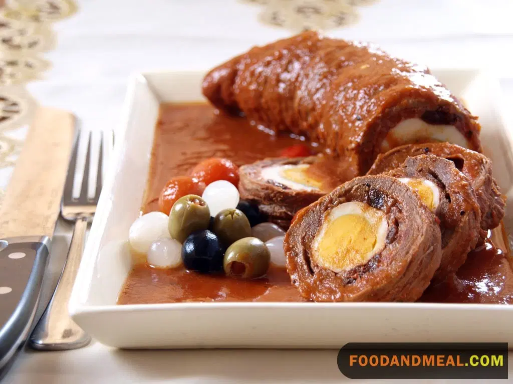

The culinary heart of the Philippines — bold flavors, rich tradition
Culinary Capital of the Philippines
Kapampangans are passionate, gifted cooks. The province's cuisine is considered the gold standard of Philippine cooking — hearty, flavorful, and deeply rooted in centuries of tradition and culture.

Must TryPampanga's most famous dish — chopped pork cheeks, ears, and liver on a sizzling plate, seasoned with calamansi and chili. A Kapampangan original now loved nationwide.

ClassicA rich oxtail and vegetable stew in a thick peanut sauce, traditionally served with shrimp paste (bagoong). A festive and beloved Kapampangan staple.

BreakfastSweet cured pork (tocino) and garlicky sausage (longganisa) are Pampanga specialties that have become breakfast staples all over the Philippines.

DessertA creamy, jiggly carabao's milk pudding unique to Pampanga. Its name comes from the heartbeat-like jiggle when you tap it.

TraditionalFermented shrimp with cooked rice — a distinctly Kapampangan condiment and side dish with a bold, acquired flavor.

FiestaA festive beef roulade stuffed with chorizo, eggs, and pickles, braised in a rich tomato sauce — reserved for special occasions.